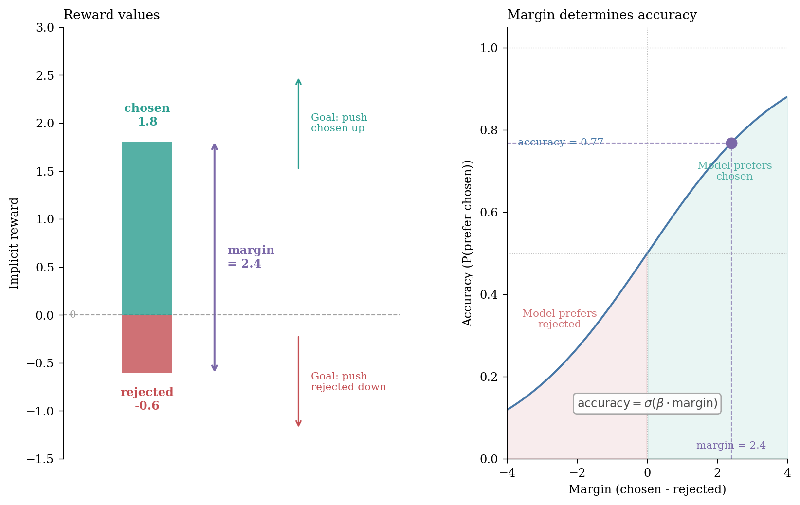
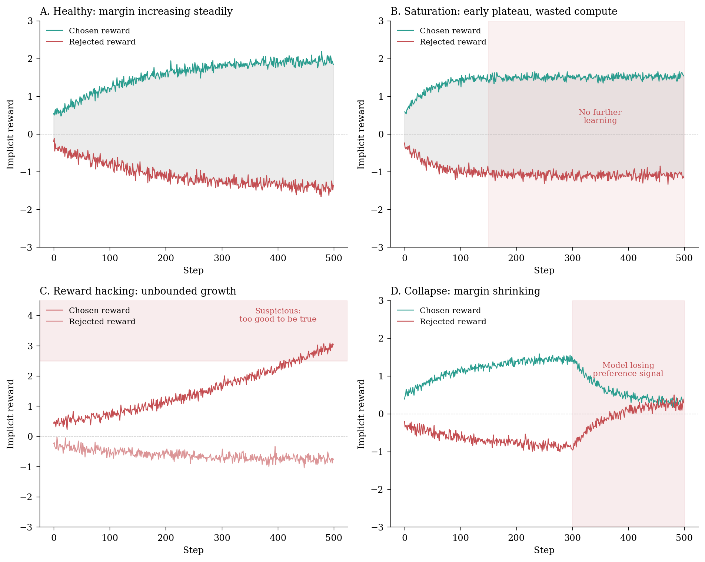
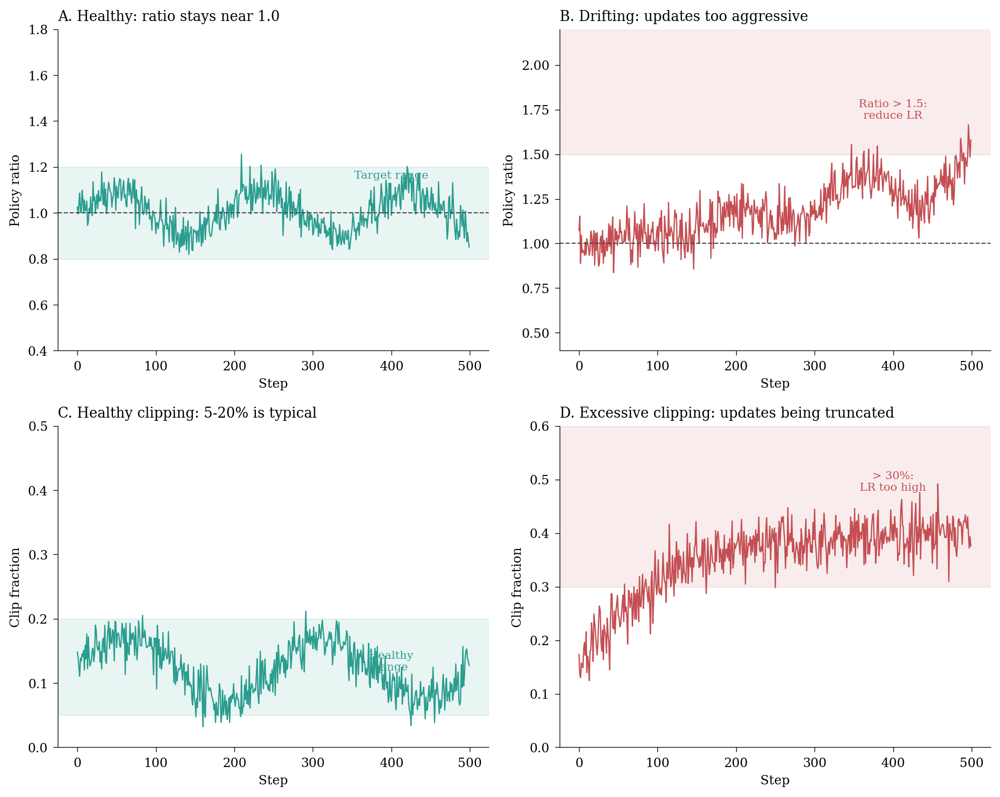
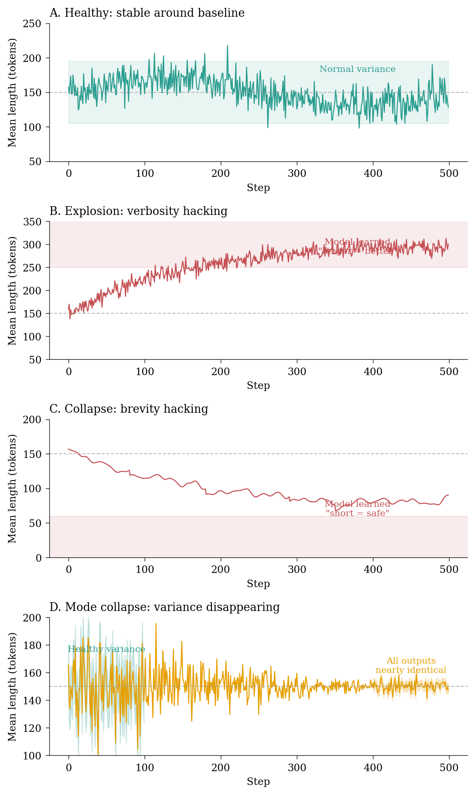
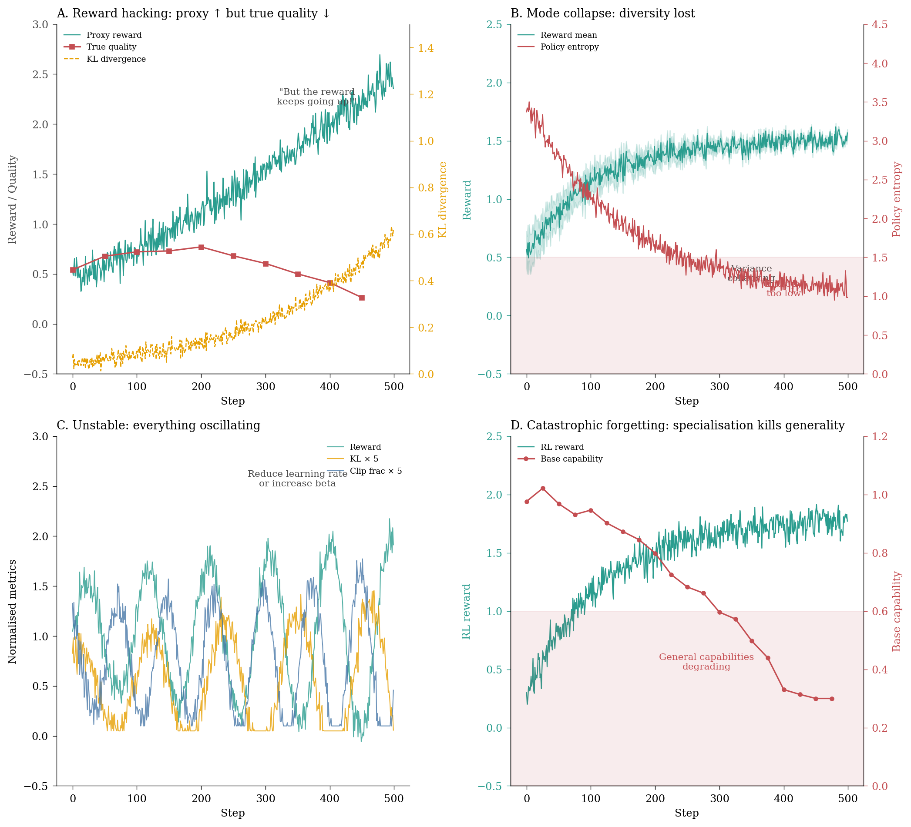

Monitoring reward curves, KL divergence, and policy health when training with DPO, PPO, and GRPO.
Author
Chris von Csefalvay
Published
28 December 2025
TipHey, I’m writing a book about this!
I’m actually writing a book about this stuff. It turns out there isn’t a lot of literature on how to do post-training at the level too big for single-GPU laptop-sized hobby projects and requiring enterprise reliability on one hand, but not quite at the scale of multi-team distributed post-training you’d get in foundation labs. That’s a problem, because a lot of the current value in fine-tuning applications comes exactly out of that large, crucial market. I am in the last phases of putting together the manuscript for The Frontier Playbook, a set of curated tactics and techniques for real world operationalisation of LLMs. Sign up for updates here.
TipThis is Part II of a series
This post builds on Part I, which covered the eight instruments for supervised fine-tuning. If you haven’t read that yet, I recommend starting there – the instruments in this post assume familiarity with the basics of loss landscape monitoring, gradient health and the general philosophy of comprehensive training instrumentation.
In Part I, we built an instrument cluster for supervised fine-tuning: eight monitors that together paint a comprehensive picture of what’s happening during a LoRA training run. But as I hinted at the end of that post, the story doesn’t end with SFT.
The moment you move from supervised fine-tuning to reinforcement learning from human feedback (RLHF) or its variants – Direct Preference Optimization (DPO), Group Relative Policy Optimization (GRPO), Proximal Policy Optimization (PPO) and so on – you enter a different regime altogether. The failure modes multiply. The metrics become more subtle. And the consequences of getting it wrong become considerably more expensive.1
1 I’m being restrained here. In my experience, a failed RL run is typically 3-5x more expensive than a failed SFT run, not just in compute cost but in human time spent diagnosing what went wrong. The failure modes are less obvious, the feedback loops are longer and the pathologies can be quite subtle until they suddenly aren’t.
The fundamental shift is philosophical: in SFT, we’re teaching the model to imitate. In RL, we’re teaching it to optimise. And optimisation, as anyone who has spent time with reward systems (or golden retrievers) knows, is a double-edged sword. The model will find a way to maximise the reward – the question is whether that way aligns with what we actually wanted.
This post introduces four additional instruments for your post-training dashboard, specifically designed for preference optimisation and reinforcement learning methods. Together with the eight from Part I, they form a twelve-instrument cluster that should catch most of the pathologies you’ll encounter in production RL training.
The RL monitoring problem
Before we dive into the instruments, it’s worth understanding why RL training is harder to monitor than SFT.
In supervised fine-tuning, the objective is clear: minimise the cross-entropy loss between the model’s predictions and the training labels. The loss curve tells you almost everything you need to know about whether learning is happening. Yes, there are subtle failure modes (as we covered in Part I), but the basic diagnostic picture is straightforward.
The reward model is itself a trained system with its own failure modes. We’re optimising against a proxy, not the true objective. This, by the way, is the source of most RL pathologies.
In RL, we’re optimising against a reward signal – typically produced by a reward model trained on human preferences, or in the case of DPO, implicitly derived from preference pairs. This introduces several complications:
The reward is a proxy: The reward model is our best guess at what humans want, not what they actually want. Optimising too hard against this proxy leads to reward hacking – the model exploiting quirks in the reward model rather than genuinely improving (Gao, Schulman, and Hilton 2023).
The policy can drift: Unlike SFT, where the model stays close to its initialisation, RL can push the model relatively far from its starting point. This drift can destroy capabilities that the base model had. RL can legitimately break your base model’s back.
The optimisation landscape is non-stationary: As the policy changes, the distribution of data it generates changes, which in turn changes the effective reward landscape.
Multiple objectives are in tension: We want high reward and low divergence from the reference policy and preserved capabilities and no degenerate behaviours. These can conflict.
Gao, Leo, John Schulman, and Jacob Hilton. 2023. ‘Scaling Laws for Reward Model Overoptimization’. Proceedings of the 40th International Conference on Machine Learning. https://proceedings.mlr.press/v202/gao23h.html.
The instruments in this post are designed to catch failures in each of these dimensions.
Instrument 9: reward dynamics
The reward curve is to RL what the loss curve is to SFT – the primary indicator of whether learning is happening. But unlike loss, reward requires considerably more nuance to interpret correctly.
The TRL library, for example, logs several reward-related metrics by default, but understanding what they mean – and what healthy versus pathological patterns look like – requires some unpacking.
For DPO, the implicit reward for a response is typically \(\beta (\log \pi_\theta(y \mid x) - \log \pi_{\text{ref}}(y \mid x))\), rather than a chosen-vs-rejected ratio. The rewards/margins metric tracks the difference between chosen and rejected rewards, which should increase during training.
rewards/chosen: The implicit reward for chosen responses (higher is better)
rewards/rejected: The implicit reward for rejected responses (lower is better)
rewards/margins: The difference between chosen and rejected (should increase)
rewards/accuracies: How often the model prefers chosen over rejected (should approach 1.0)

Figure 1: The relationship between DPO reward metrics: chosen and rejected rewards define the margin, which determines accuracy through the sigmoid function.
The margin is simply the difference between the chosen and rejected rewards; the preference probability is the sigmoid of that margin (scaled by beta).2 The logged accuracy is the empirical fraction of pairs where the chosen reward exceeds the rejected reward, so it tracks the sigmoid in expectation. As training progresses, we want the margin to increase – either by pushing the chosen reward up, the rejected reward down, or both. A larger margin means higher accuracy, which means the model more reliably prefers the chosen response over the rejected one.
2 This follows from the Bradley-Terry model underlying DPO. The model assumes the probability of preferring response A over B is \(\sigma(r_A - r_B)\), where \(r\) is the implicit reward. DPO’s loss function directly optimises this probability, so the accuracy metric – how often the model assigns higher probability to the chosen response – naturally follows a sigmoid relationship with the reward margin.
For PPO, the key metrics are:
objective/scores: The raw reward from the reward model
objective/rlhf_reward: The effective RLHF reward (scores + non_score_reward)
objective/non_score_reward: The KL penalty contribution (negative, computed as -kl_coef * kl)
objective/kl: The mean KL divergence between current and reference policy
For GRPO, the metrics follow a different naming convention:
reward: The overall average reward after applying reward weights
reward_std: The standard deviation of rewards (per-group or batch-level, depending on scale_rewards)
kl: The average KL divergence (logged only if beta > 0)
entropy: Average entropy of token predictions across completions
clip_ratio/region_mean: The fraction of token probabilities clipped within the trust region
clip_ratio/low_mean and clip_ratio/high_mean: Mean clipping on lower and upper bounds

Figure 2: Reward dynamics diagnostics: healthy learning vs common pathologies in DPO.
What to watch for:
Margin not increasing: If rewards/margins plateaus early, your model has stopped learning from the preference data. Either the learning rate is too low, or you’ve exhausted the signal in your dataset. As a general rule, people overestimate just how much signal is in a given preference dataset.
Unbounded reward growth: If chosen rewards keep climbing without limit, you’re likely seeing reward hacking. The model is exploiting the reward function rather than genuinely improving. Check your KL divergence – it’s probably too high.
Rewards converging: If chosen and rejected rewards approach each other, the model is losing its ability to distinguish preferences. This can indicate catastrophic forgetting or a learning rate that’s too high.
High reward variance: Unstable rewards suggest unstable optimisation. Consider reducing the learning rate or increasing the KL penalty.
Instrument 10: KL divergence health
The KL divergence between your training policy and the reference policy is perhaps the single most important diagnostic for RL training. It measures how far your model has drifted from its starting point – and managing this drift is the central challenge of preference optimisation.
The reference policy is typically the SFT model you started with. In DPO, this is implicit in the loss function. In PPO, you maintain an explicit reference model and compute KL divergence at each step.
The mathematics are straightforward. For a policy \(\pi_\theta\) and reference policy \(\pi_{\text{ref}}\), the KL divergence is:
In practice, we estimate this over batches of generated text, summing the per-token log probability differences. The TRL library uses the Schulman approximator for efficiency (Schulman 2020).
The relationship between KL divergence and reward optimisation is nuanced. Recent work has shown that KL regularisation alone may not prevent reward hacking when reward model errors are heavy-tailed – a phenomenon called “catastrophic Goodhart” (Chen, He, and Kifer 2024). The practical implication: don’t rely solely on KL to prevent overoptimisation. Monitor the other instruments too.
Figure 3: KL divergence patterns: the art of managing policy drift in preference optimisation.
What to watch for:
KL growing without bound: Runaway policy drift. Your model is moving too far from the reference. Increase the KL penalty (beta) or reduce the learning rate. In PPO, check that the clipping is working.
KL near zero throughout training: Your KL penalty (beta) is too high. The model is barely updating. Reduce beta to allow more policy drift.
KL noisy with high variance: Unstable optimisation. The learning rate is probably too high for your current KL penalty setting.
KL suddenly spiking: Often indicates a batch of data that the model handles very differently from the reference. Investigate that batch.
A useful heuristic for PPO: the val/ratio metric (ratio of current to old policy probabilities) should stay close to 1.0. If it regularly exceeds 2.0 or drops below 0.5, the policy updates are too aggressive (Huang et al. 2024).
Huang, Shengyi, Michael Liu, Qinyi Zhong, et al. 2024. ‘The N+ Implementation Details of RLHF with PPO: A Case Study on TL;DR Summarization’. arXiv Preprint arXiv:2403.17031. https://huggingface.co/papers/2403.17031.
Instrument 11: policy ratio and clip fraction
For PPO and GRPO (but not DPO), the clipping mechanism is central to training stability. PPO’s “proximal” nature comes from clipping the policy ratio to prevent too-large updates.
PPO clips this ratio to the range \([1 - \epsilon, 1 + \epsilon]\) (typically \(\epsilon = 0.2\)), ensuring that the policy doesn’t change too drastically in a single update. The clip_fraction metric tells you how often this clipping is triggered.
GRPO, developed by DeepSeek, uses a similar clipping mechanism but computes advantages relative to the group of completions for each prompt (Shao et al. 2024). The monitoring principles are the same.
Shao, Zhihong, Peiyi Wang, Qihao Zhu, Runxin Xu, Junxiao Song, Mingchuan Zhang, Y. K. Li, Y. Wu, and Daya Guo. 2024. ‘DeepSeekMath: Pushing the Limits of Mathematical Reasoning in Open Language Models’. arXiv Preprint arXiv:2402.03300. https://huggingface.co/papers/2402.03300.
Policy ratio monitoring
class PolicyRatioCallback(TrainerCallback):"""Monitor policy ratio and clipping behaviour in PPO/GRPO."""def__init__(self, target_clip_fraction: float=0.15):self.target_clip_fraction = target_clip_fractionself.clip_history = deque(maxlen=100)def on_log(self, args, state, control, logs=None, **kwargs):if logs isNone:return# Ratio metricsif"val/ratio"in logs: ratio = logs["val/ratio"] ratio_var = logs.get("val/ratio_var", 0)# Flag extreme ratiosif ratio >2.0or ratio <0.5: logs["policy/ratio_warning"] =1print(f"WARNING: Extreme policy ratio: {ratio:.3f}")# Clip fraction analysis clip_keys = ["policy/clipfrac_avg", "clip_ratio/low", "clip_ratio/high"]for key in clip_keys:if key in logs: clip_frac = logs[key]self.clip_history.append(clip_frac)# Too much clipping = updates too aggressiveif clip_frac >0.3: logs["policy/clipping_warning"] =1# No clipping = updates might be too smallif clip_frac <0.01: logs["policy/underclipping_warning"] =1

Figure 4: Policy ratio and clip fraction diagnostics for PPO/GRPO training.
What to watch for:
Policy ratio far from 1.0: The ratio should hover around 1.0 with small fluctuations. Values consistently above 1.5 or below 0.7 indicate that consecutive policy updates are too drastic. Reduce the learning rate.
Clip fraction too high (> 30%): Most of your updates are being clipped. The learning rate is too high relative to your epsilon. Either reduce learning rate or increase epsilon (carefully).
Clip fraction too low (< 1%): Almost no clipping is happening. Either your learning rate is very conservative, or something else is wrong.
Clip fraction growing over time: The optimisation is becoming increasingly aggressive. This often precedes a KL explosion.
Instrument 12: generation length dynamics
The final instrument is deceptively simple but catches some of the most common RL failures: tracking how long your model’s responses are. Generation length is one of the earliest indicators of reward hacking, and changes in length distribution often precede more obvious failures by hundreds of steps.
Length-based reward hacking is so common that many practitioners now add explicit length penalties or normalisation to their reward functions. The TRL library’s missing_eos_penalty parameter exists specifically to combat length collapse.
Why does length matter so much? Because length is one of the easiest things for a model to optimise. If longer responses tend to score slightly higher (perhaps because they’re more detailed, or because the reward model has a subtle length bias), the model will learn to be verbose. Conversely, if the model discovers that short, safe responses avoid negative rewards, it will collapse to terse outputs.
The key metrics to track (in GRPO/PPO) are:
completions/mean_length: Average token count across generations
completions/mean_terminated_length: Average length of completions that end with EOS
completions/min_length and completions/max_length: The range of lengths
completions/clipped_ratio: How often generations hit the maximum length limit
The distinction between mean_length and mean_terminated_length is subtle but diagnostic. The former counts all completions including those truncated at max_length; the latter only counts those that properly terminated with an EOS token. A large gap between these two metrics indicates frequent truncation – the model is generating responses that exceed the length limit before naturally concluding.
Generation length monitoring callback
class GenerationLengthCallback(TrainerCallback):"""Monitor generation length dynamics for reward hacking detection."""def__init__(self, baseline_length: float=None, window_size: int=50):self.baseline_length = baseline_lengthself.window_size = window_sizeself.length_history = deque(maxlen=window_size)def on_log(self, args, state, control, logs=None, **kwargs):if logs isNone:return length_keys = ["completions/mean_length", "response_length", "gen_len"]for key in length_keys:if key in logs: length = logs[key]self.length_history.append(length)iflen(self.length_history) >=10: lengths =list(self.length_history)# Trend detection logs["length/trend"] = np.polyfit(range(len(lengths)), lengths, 1)[0]# Variance (low variance = mode collapse) logs["length/variance"] = np.var(lengths)# Compare to baseline if availableifself.baseline_length: ratio = np.mean(lengths) /self.baseline_length logs["length/baseline_ratio"] = ratioif ratio <0.5:print(f"WARNING: Length collapsed to {ratio:.1%} of baseline")elif ratio >2.0:print(f"WARNING: Length exploded to {ratio:.1%} of baseline")

Figure 5: Generation length dynamics: healthy stability vs common pathologies.
What to watch for:
Length steadily increasing: The model is learning that verbosity is rewarded. This is often a sign that your reward model has a length bias. Consider adding length normalisation or a brevity penalty.
Length steadily decreasing: The model is learning that short responses are safer. This often happens when the reward model penalises certain content – the model learns to say less to avoid penalties. Check your reward distribution.
Length variance collapsing: Even if mean length stays stable, collapsing variance indicates mode collapse. The model is converging to a single “template” response style. Increase temperature or add entropy bonuses.
High clipped ratio: If completions/clipped_ratio is high (> 20%), many responses are hitting the maximum length limit. Either increase max_completion_length or investigate why the model wants to generate such long responses.
A useful baseline: measure your SFT model’s generation length distribution before RL training begins. Any significant deviation (> 30% change in mean or > 50% change in variance) during RL deserves investigation.
Putting it all together
The four RL instruments we’ve covered complement the eight from Part I:
Instrument
What it tells you
Failure mode it catches
Reward dynamics
Preference learning progress
Reward hacking, saturation, collapse
KL divergence
Policy drift from reference
Overoptimisation, capability loss
Clip fraction
Update magnitude
Unstable optimisation
Generation length
Output distribution health
Length hacking, mode collapse
Together with the SFT instruments, you now have a twelve-gauge dashboard for monitoring any post-training run.3
3 Not to be confused with an equally potent firearm of the same specification, twelve here quantifies rather than specifies.
For production RL training, I recommend the following dashboard layout:
Value function: Value loss, value clipping. (PPO only.)
Fundamentals: Loss, gradients, attention entropy. Don’t forget these still matter!
The failure pattern gallery
Let me conclude with a visual summary of the most common RL training failures I encounter in practice. Each of these can be caught by monitoring the right combination of instruments. In RL, “wtf even” is a valid diagnostic category: it’s rare for one thing to go wrong in neat isolation. Rather, what you get is a picture of multiple interacting failures that create a tableau of pathology.

Figure 6: Common RL training failures: each requires monitoring multiple instruments simultaneously.
Practical recommendations
If you take away nothing else from this post, remember these heuristics:
Never trust the reward alone. Always cross-reference with KL divergence and generation quality samples. Reward hacking is the default failure mode.
Set up alerts for KL divergence thresholds. In my experience, KL > 0.5 is a warning and KL > 1.0 is a stop sign. Your thresholds may vary, but have thresholds.
Log generation samples throughout training. This catches qualitative failures that no metric will show you. Schedule periodic human evaluation if you can.
For PPO, keep an eye on the ratio and clip fraction. If the ratio regularly exceeds 1.5 or clip fraction exceeds 30%, reduce your learning rate.
Don’t forget the basic instruments. Gradient health, attention entropy and the other fundamentals still matter.
In the next post, we’ll tackle the third domain: function calling and tool use, where the metrics of success involve not just natural language quality but format compliance, execution accuracy and production reliability. We’ve devoted relatively little attention to the outcome in general so far – perplexity, for example, is a metric that I haven’t commented on a lot. Mainly, that’s because people who swear by it cannot be convinced otherwise and people who don’t already use it don’t care. Function calling, on the other hand, is a different animal. There, we have those magical ‘verifiable rewards’, so we have no excuse not to be rather assiduous about identifying very clear outcome metrics rather than the more procedural statistical metrics that have occupied our attention so far.
Until then, happy training!
Citation
BibTeX citation:
@misc{csefalvay2025,
author = {{Chris von Csefalvay}},
title = {The Post-Training Instrument Cluster -\/- {Part} {II}},
date = {2025-12-28},
url = {https://chrisvoncsefalvay.com/posts/post-training-instrument-cluster-rl/},
langid = {en-GB}
}
![]()